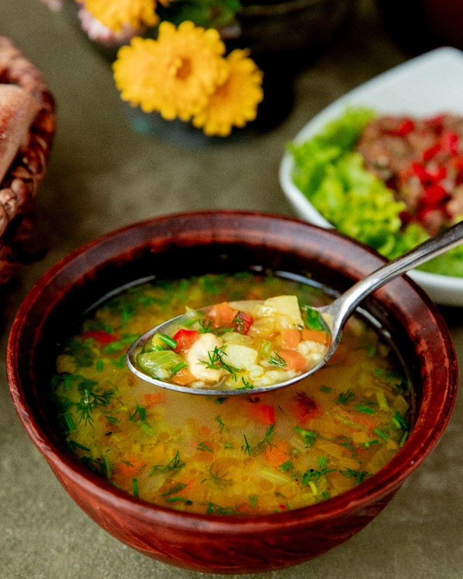

Sancocho serrano
Región Andina • Colombia

Historia y Tradición
El sancocho serrano hace parte de la tradición culinaria de las zonas andinas y montañosas de Colombia. El sancocho, en sus diferentes versiones, suele prepararse con carnes, plátano, yuca, papa, mazorca, cebolla, cilantro y otros ingredientes disponibles en cada territorio. El término "serrano" hace referencia a su relación con las regiones de montaña y a las particularidades locales de su preparación. Más allá de ser un alimento, el sancocho tiene un fuerte significado social y comunitario: tradicionalmente se prepara en grandes cantidades para compartir en reuniones familiares, encuentros entre amigos, celebraciones y actividades comunitarias. Por ello, representa valores como la hospitalidad, la unión y el compartir.
Ingredientes
- 500 g de carne serrana, cortada en dados.
- 2 cebollas largas.
- 4 plátanos verdes, pelados y partidos a mano.
- 300 g de yuca.
- 200 g de papas.
- 1 tomate maduro, picado.
- 3 hojas de chillangua (cilantro cimarrón), molidas.
- 1 cucharadita de poleo molido.
- 1 aguacate.
- Sal y pimienta al gusto.
Preparación
- Corte la yuca y las papas en trozos. Agréguelas a la cacerola junto con los ingredientes restantes, excepto el aguacate.
- Sazone con sal y pimienta al gusto. Cocine durante 20 minutos más, o hasta que todos los ingredientes estén tiernos.
- Para finalizar, abra el aguacate por la mitad en sentido longitudinal, retire la pepa y córtelo en cuatro gajos.
- Sirva el sancocho bien caliente acompañado de los gajos de aguacate.